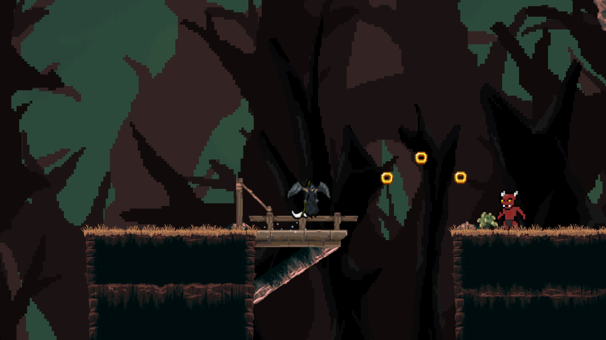

Projects
Forgotten Memories

Forgotten Memories is a work in progress, however it is a 3D adventure/exploration game that is developed and designed from scratch in Unity Game engine. The player starts the game off with having recently come out of hospital with memory loss regarding the past, to gather fragments of the past, the player would have to experience and find specific objects that could spark regain in memory.
regular updates on this title can be found on my Twitter (Link in the footer)

Urban Wards

Urban Wards is a 3D serious hazard perception game developed for my University final year project. The game consists of 3 levels ranging from day time to different urban environments. The video game was developed with the target audience in mind which is primarily for Older adults. No prior knowledge of Unity or C# before undertaking project including the writing of the dissertation which all was completed and played-through in 6 months.

Actions Have Consequences

Actions have consequences is a published 2D platformer solo developed for my MA game development module in which was assigned to create a game for a Game Jam within 2 weeks
Since the release (April 2021) onto Itch.io which can be found here, it has amassed over 275 downloads which lead me to make plans of releasing regular updates.

Technical Artist - FireSlug studios
Technical Artist at FireSlug studios which is a start-up game company based in London,UK. Currently working on the new IP "Ashborn" which is a 3D RPG dungeon crawler with team swap mechanics. Since joining the team, I have been apart of building the combat beta release and have contributed to weekly updates/bug fixes.
● Development Lighting overhaul – Created a lighting system to set the mood to the game and added particle effects to interactable objects.
● Fixing shading bugs on emissions and shaders to fit new lighting system.
● Collaborating with Artists, creative directors, and technical engineers through a handful of meetings per week to ensure workload is being handled correctly for promotional launch.
● C# scripting for main menu navigation, gameplay, development, and animation sequences.
● Terrain bug fixes
● Worked on the initial combat build for beta release
● Implementation of a main menu credits page with UI design and creation
● Controller input Implementation for Title screen
Adventures Of Blue
Adventures Of Blue is a 2D platformer that was developed within a week purely to get experience working with 2D and to set myself a personal challenge of developing a game in 1 week. You get to play as the character "Blue" who is trapped in a cave filled with moving platforms, traps and dangerous enemies. You must navigate through each level collecting Gems where you will be rewarded with score points. Responsibilities consist of; Core gameplay mechanics, level design, character/enemy design and implementation, scripting and other bonus gameplay mechanics.